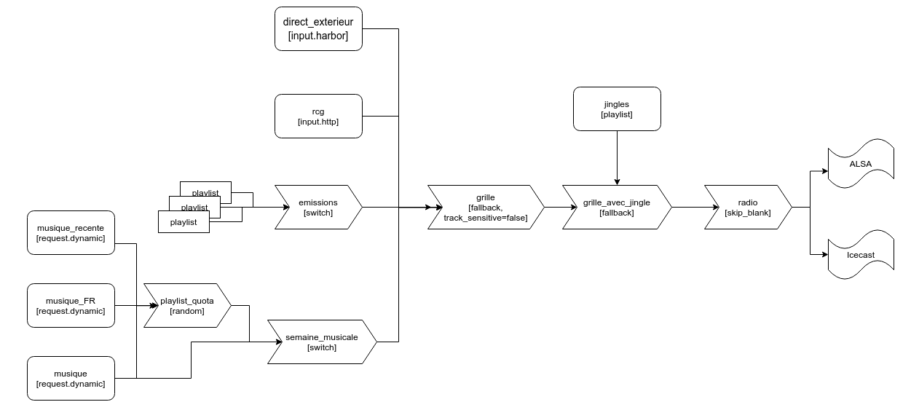

Décrocher une radio Liquidsoap sur des flux distants
Martin Kirchgessner, 2020-08-26
Tags : liquidsoap en_français
Depuis les articles précédents nous avons utilisé Liquidsoap pour faire une radio qui passe de la musique et des émissions enregistrées, en supposant que par ailleurs vous avez une bascule matérielle pour faire des émissions en direct. Dans cet article nous allons plutôt faire ce direct à distance, en envoyant un flux encodé via Internet, ou bien laisser l'antenne à un autre flux. Cela fait partie des fonctions de base de Liquidsoap, mais il y a quelques subtilités d'écriture ou de configuration.
Nous allons commencer par deux méthodes pour les décrochages vers des flux existants. Enfin nous verrons comment faire de Liquidsoap un serveur prêt à retransmettre votre flux - autrement dit : comment prendre l'antenne.
Reprendre un flux externe dès qu'il apparaît
Dans un script Liquidsoap, créer une source qui lit un flux distant s'écrit en une ligne :
source = input.http("http://live.campusgrenoble.org:9000/rcg112")
Et voilà !
Si le flux vient d'une adresse en HTTPs, utilisez plutôt input.https.
Cette source inclut un tampon (pré-chargement) de lecture de quelques secondes
pour amortir les aléas du téléchargement,
mais il n'est peut-être pas suffisant.
Attention à d'abord expérimenter hors antenne pour vérifier que le débit est suffisamment constant !
En cas d'erreurs vous pouvez ajuster le tampon avec les options
buffer (tampon minimum avant de démarrer, en secondes)
et max (durée maximum en mémoire tampon, en secondes).
Les secondes doivent être des nombres en virgule flottante,
donc s'écrire avec un point, ce qui donne par exemple :
source = input.http("http://live.campusgrenoble.org:9000/rcg112", buffer=3., max=30.)
Pour un flux temporaire (typiquement, celui créé par une émission en direct)
il n'y a plus qu'à diriger cette source vers une sortie.
En mettant cette source en premier dans la liste d'un fallback,
par exemple parmi les émissions et musiques des articles précédents,
elle prendra l'antenne dès qu'elle sera disponible.
Cette méthode n'est adaptée qu'à un flux qui n'existe que temporairement :
la source input.http est faite pour jouer dès qu'elle peut.
C'est à dire que :
- elle essaye de se connecter au flux toutes les deux secondes (vous pouvez changer ce délai avec le paramètre poll_delay), et
- si elle n'est pas reprise par une sortie (parce qu'un
switchoufallbacka donné la main à une autre source) elle va quand même lire le flux et le mettre en mémoire tampon. Très vite, votre log va se remplir de messages commeBuffer overrun: Dropping 0.03s. Consider increasing the max buffer size!
Donc ça n'est pas terrible pour un flux qui joue en permanence,
mais qu'on ne voudrait reprendre que sur une plage horaire donnée. Il ne suffirait pas de mettre la source dans un switch.
On va plutôt affiner la lecture du flux avec une deuxième méthode.
Reprendre temporairement un flux externe permanent
Il est possible d'activer la source HTTP(s) uniquement quand on veut lui laisser l'antenne.
Il va nous falloir l'unique moyen de passer des commandes à Liquidsoap pendant l'exécution :
le serveur.
Activez-le (par sécurité, en écoutant uniquement sur localhost) en ajoutant au début du script :
set("server.telnet", true)
set("server.telnet.bind_addr", "127.0.0.1")
En créant la source input.http,
on ajoute le paramètre autostart=false pour qu'elle ne commence pas la lecture du flux tout de suite :
source = input.http(id="rcg", "http://live.campusgrenoble.org:9000/rcg112", autostart=false, buffer=3., max=30.)
On a aussi ajouté id,
qui donne le nom interne de la source.
Ce nom interne va être utilisé dans la commande serveur pour démarrer le flux.
Pour démarrer ou arrêter la source de cet exemple,
les commandes seront rcg.start et rcg.stop.
Depuis le script, on peut passer des commandes au serveur avec la fonction server.execute.
On peut aussi lancer des fonctions à heures fixe
(plus généralement, dès que le test pred est vrai) grâce à exec_at.
Cela donne, pour par exemple écouter Radio Campus Grenoble
tous les jours de 15h à 16h :
exec_at(pred={ 15h00m00s },
{ list.iter(log(label="ecoute_RCG"), server.execute("rcg.start")) }
)
exec_at(pred={ 16h00m00s },
{ list.iter(log(label="ecoute_RCG"), server.execute("rcg.stop")) }
)
Ici list.iter et log s'assurent que tout ce que pourrait écrire la commande sera bien recopiée dans le log.
Le label ecoute_RCG est décoratif :
c'est un prefixe pour les messages de log qui passeront par là, mettez ce que vous voulez.
Par contre le nom avant .stop (ou .start) doit correspondre à l'id de la source !
Gestion du temps et buffers
A cause du buffer (tampon de pré-chargement) de la source input.http,
il y a quelques subtilités à prendre en compte si vous êtes à la seconde près.
Avec la méthode ci-dessus, la source ne commencera à télécharger qu'à 15h00:00.
Comme notre fonction pred est 15h00m00s,
si on démarre Liquidsoap à 15h00:01 rien ne se passera avant le lendemain 15h.
De plus notre source à été réglée avec buffer=3.,
ce qui veut dire qu'il faut pré-charger 3 secondes de son pour que Liquidsoap
considère la source comme disponible.
Enfin, il peut y avoir un délai entre le moment
où on lance la lecture du flux et le moment
où le flux nous arrive du serveur - comptez entre quelques milisecondes et
(si vous faites dans l'intercontinental) quelques secondes.
Du coup, la source sera effectivement activée à 15h00:03 et des poussières.
Inversement, quand on arrête le flux il reste du son dans le buffer :
avec nos réglages (max=30.), il peut contenir jusqu'à 30 secondes.
Dans l'exemple ci-dessus, le téléchargement du flux va s'arrêter dès la commande stop,
donc à 16h00:00.
Mais si à ce moment-là on a 23 secondes de son pré-chargées,
la source sera encore disponible pendant 23 secondes.
Et il va falloir diffuser ces 23 secondes.
Si une autre source prend l'antenne à 16h00:00
(par exemple, parce qu'elle est devant dans fallback et qu'elle commence à 16h00:00)
alors nos 23 secondes resteront dans le buffer ;
Liquidsoap les jouera dès que possible,
selon ce qu'il y a dans le reste du script,
mais probablement trop en décalé pour ça ait un sens à l'antenne.
Autrement dit : en combinant une input.http aux autres sources,
attention à vous assurer qu'elle continue à jouer tant qu'elle est disponible !
Le réglage buffer=3., max=30. est indicatif - et un peu large,
pour éviter les coupures.
Si vous êtes sûrs de la connection entre les deux machines, mettez moins.
En tout cas : faites des tests avec différents réglages pour buffer et max.
Recevoir un flux directement dans Liquidsoap
Nous allons maintenant créer une source qui se comporte comme un serveur Icecast avec input.harbor.
Coté "client", donc depuis le studio qui créé le flux,
on connectera l'appli vers la machine qui éxecute Liquidsoap au point de montage configuré.
Dans cet exemple, le point de montage s'appellera direct :
direct_exterieur = input.harbor(id="direct_exterieur",
buffer=2.,
max=10.,
port=8005,
user="michel",
password="superphrasedepasse",
"direct"
)
La méthode la plus simple pour intégrer cette source est de la mettre en tête
d'un fallback(track_sensitive=false.
Ainsi, on prend l'antenne dès que le flux est lancé :
grille = fallback([direct_exterieur, emissions, semaine_musicale],
transitions=[crossfade_3s, crossfade_3s, crossfade_3s],
track_sensitive=false, id="grille")
A partir de là vous avez un serveur qui attend des connections : c'est simple à configurer, mais on entre dans des considérations qui dépassent Liquidsoap et sont importantes puisqu'il s'agit de la sécurité de la machine et donc de votre antenne. Lisez donc section en entier avant de vous lancer.
Vous devrez aussi vous assurer que vous pouvez atteindre le serveur depuis Internet :
si vous n'avez pas une IP fixe ou un cable qui y mène directement,
utilisez la
NAT
ou un tunnel SSH.
Après cet article lisez également le chapitre sur harbor dans
la documentation de Liquidsoap.
Pour la sécurité : le plus important reste d'utiliser des mots de passe longs (vous pouvez mettre des phrases) et de les changer régulièrement (grand minimum tous les ans). Vous pouvez en plus utiliser les techniques suivantes.
Séparer la gestion des mots de passes du script Liquidsoap
Au lieu de préciser user et password lors de la définition de la source,
on peut plutôt lui passer une fonction auth qui décidera de quoi faire dès que quelqu'un essaira de se connecter.
En plus d'éviter de devoir redémmarrer Liquidsoap pour changer le(s) mot(s) de passe,
cela permet de donner/retirer des comptes individuels :
c'est le plus sûr si cette prise d'antenne est régulière par des personnes différentes.
Pour enregistrer/chiffrer/vérifier ces mots de passes,
il faut un programme extérieur :
vous pouvez utiliser auth.py,
script Python téléchargeable ici.
La source se créé alors comme ci-dessous,
avec une fonction auth qui appelle auth.py :
def auth(user,password) =
ret = get_process_output("/home/radio/auth.py #{user} #{password}")
if string.trim(ret) == "ok" then
true
else
false
end
end
direct_exterieur = input.harbor(id="direct_exterieur",
buffer=2.,
max=10.,
auth=auth,
port=8005,
"direct" # mountpoint name
)
On utilise string.trim car en Python print("ok") donne très exactement "ok\n".
Avec les deux blocs ci-desus, Liquidsoap appelera directement notre script pour vérifier les mots de passe. Pour enregistrer des mots de passe, l'utilisation d'auth.py est expliquée au début du script ou si vous l'appelez sans arguments.
Chiffrer le flux
On recommande aussi d'utiliser une connection chiffrée, pour que le flux et surtout le mot de passe donné au début du flux ne soient pas transférés en clair sur Internet. Pour cela, assurez-vous aussi que votre client Icecast peut streamer avec SSL. La source à utiliser coté Liquidsoap est la variante input.harbor.ssl. Cette source a besoin de certificats SSL.
Si votre machine est accessible directement depuis Internet (en particulier son port 80),
vous pouvez obtenir des certificats en installant Certbot.
Exécutez alors sudo certbot certonly --standalone
Une fois les certificats obtenus,
indiquez les à Liquidsoap en ajoutant au début du script :
set("harbor.ssl.certificate", "/etc/letsencrypt/live/myradio.com/cert.pem")
set("harbor.ssl.private_key`", "/etc/letsencrypt/live/myradio.com/privkey.pem")
Si votre clé privée nécessite un mot de passe, ajoutez une ligne set("harbor.ssl.password", "...").
Conclusion
Voilà donc toutes les possiblités de décrochages avec Liquidsoap.
Elles prennent la forme de sources,
que l'ont peut ajouter et intégrer à celles vues dans les articles précédents.
Vous trouverez ici le fichier .liq complet ;
le schéma des sources et éléments qu'il utilise commence à se complexifier :
